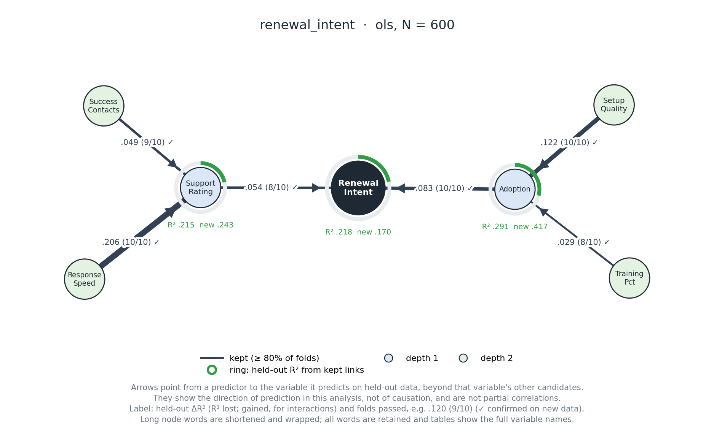
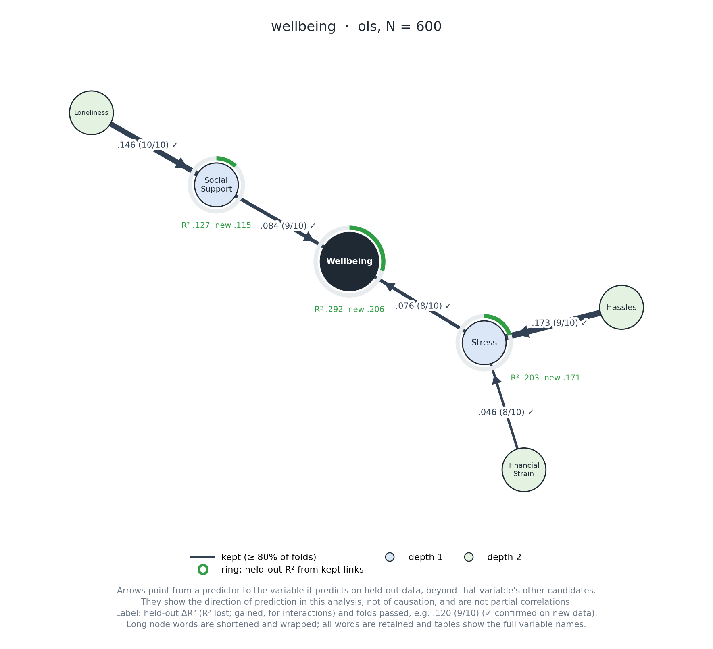
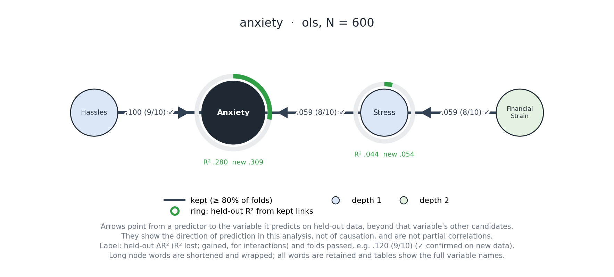
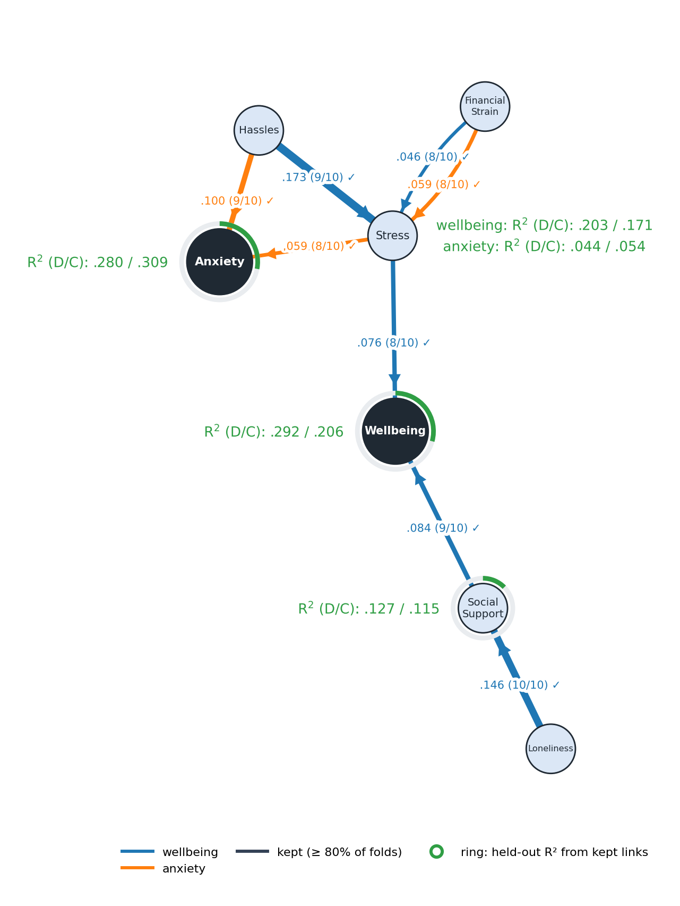

What OPEN does
OPEN looks for predictors of an outcome, then asks what predicts the predictors it kept. The result is a layered map of predictive links.
- Explore: compare candidate predictors against shuffled-noise references using cross-validation.
- Expand: take stable predictors and explore them as new targets, moving outward one depth at a time.
- Confirm: test the links selected during exploration on data that was held aside or collected independently.
- Evaluate fit: separately estimate how well the frozen network predicts on the confirmation data.
That last distinction matters: a link test asks whether a selected predictor contributes beyond the other candidates; fit asks how well the full selected network predicts. Neither turns an observational pattern into a causal result.
Which workflow should I use?
One outcome, one dataset
Use analyze(data, outcome="Y") when the dataset is large enough to reserve separate exploration and confirmation rows. It splits rows once, explores on one part, and confirms on the other.
Several outcomes, same participants
Use analyze(data, outcomes=["Y1", "Y2"]). It shares the row split and runs a separate network per outcome. By default, Holm correction covers testable links across the selected outcomes.
Exploration now, new sample later
Use explore(data, outcome="Y"), preserve that result, then use confirm(result, new_sample) and evaluate_fit(result, new_sample). The confirmation sample must be independent of exploration.
Only need the exploratory map?
Use explore if this is explicitly exploratory or you plan a later independent confirmation. Report the links as hypotheses, not confirmed findings.
Which exploration engine?
| Engine | Best match in current evidence | Trade-off to keep in mind |
|---|---|---|
ols (default) | Roughly straight-line or monotone relationships. | A clear, familiar baseline; it can miss curved patterns. |
elastic_net | Linear/monotone patterns, especially when candidates are numerous or correlated. | Can retain more false links than OLS in some validation conditions. |
lightgbm | Curved patterns, including U-shapes; strongest demonstrated recovery was at exploration N=1,000. | At N=300–500, U-shaped links mostly appeared as flagged leads rather than kept links. |
These are evidence-guided starting points, not an automatic engine-selection rule. Pick based on plausible patterns and compare responsibly when the study plan allows it. See the engine notes.
Sample size and k-fold settings
OPEN uses folds at different stages. In exploration, folds is the outer cross-validation count used to assess predictive contribution. Some learners may also tune settings internally; tuning_folds controls that inner tuning and defaults to 3. Confirmation has its own test procedure. The 50/50 split in analyze is a separate choice from the fold count.
| Usable rows at one analysis stage | K=10 approximate test/train rows per fold | What the validation evidence supports |
|---|---|---|
| 300 | 30 held-out / 270 training | Exploration was studied at this N. OLS and Elastic-Net are weak choices for U-shaped effects; LightGBM mostly flagged rather than kept U-shaped links. Confirmation calibration was studied from N=275 for OLS + HC4 and N=300 for LightGBM. |
| 500 | 50 held-out / 450 training | OLS and Elastic-Net detected linear or monotone effects in the simulations. LightGBM still mostly flagged U-shaped links. |
| 1,000 | 100 held-out / 900 training | OLS and Elastic-Net detected linear or monotone effects; LightGBM kept 81% of the simulated U-shaped effects. |
What K should I choose? The evidence-backed default is folds=10, the setting used in the validation grid at stage-specific N=300, 500 and 1,000. The project has not established a validated rule that automatically maps every sample size to a different K. Keeping K=10 makes results comparable to the evidence. Smaller K gives larger test folds but fewer repeated train/test partitions; larger K gives smaller test folds and more computation. Neither change is a free power improvement.
analyze example leaves about 600 rows for exploration and 600 for confirmation. That 600-row stage size lies between tested grid points; it is not itself a separately validated threshold. At 10 folds, each stage has roughly 60 rows per test fold. If you want about 1,000 exploration rows after a 50/50 split, about 2,000 total rows is the arithmetic starting point, not a newly validated minimum.Below N=300 for exploration, the cited exploration grid does not provide direct evidence. That does not mean the code cannot run; it means treat the result as outside the studied range and plan for instability. For high-dimensional, missing, clustered, repeated-measures, or non-independent observations, simple row counts are not enough: the split and folds must respect the sampling design.
Evidence: OPEN validation evidence. These are simulation-specific findings, not universal sample-size guarantees.
Set up the examples
Clone the repository, install the plotting extra, then run from the repository root. The included CSVs are fictional and reproducible with fixed seeds.
git clone https://github.com/imh-ds/open.git
cd open
python -m pip install ".[visualization]"Download: business dataset · psychology dataset · data-generation script.
Examples use OLS by default and the standard 10 exploration folds; they disable interactions and stop at depth 2 to keep the walkthrough focused. `analyze` uses its default 50/50 split.
Example 1: business research, one outcome
Question: In a fictional software company, which customer-account measures predict a contact’s renewal-intent score, and what predicts those measures? Each of the 1,200 rows represents one account. renewal_intent is the numeric 1–7 outcome; the other ten columns are candidate predictors.
import pandas as pd
from open.api import ExploreConfig, analyze, save_split
business = pd.read_csv(
"examples/tutorial/data/business_customer_renewal.csv"
)
y = "renewal_intent"
predictors = [column for column in business.columns if column != y]
result = analyze(
business,
outcome=y,
predictors=predictors,
config=ExploreConfig(max_depth=2, interactions=False, seed=42),
split_seed=42,
)
print(result.summary())
save_split(result, "tutorial-output/business")
Interpret this result
In this generated dataset, adoption → renewal_intent passed in 10/10 folds and support_rating → renewal_intent in 8/10. Both were confirmed on the held-aside sample after correction. At depth 2, setup quality and training predicted adoption; response speed and success contacts predicted support rating. For example, the held-out ΔR² for adoption at the outcome target was about 0.083: removing adoption reduced cross-validated R² by that amount, conditional on the other candidate predictors in that target model.
The exploratory root R² was about 0.218; confirmation-sample cross-validated fit was about 0.170. The difference is a reminder that fit can vary between samples. It does not mean the links are causal, and the 1,200-row demo is a reproducible illustration rather than a sample-size recommendation.
Example 2: psychology research, two outcomes
Question: In a fictional adult survey, what predicts self-reported well-being and anxiety symptoms? Both scores are numeric 1–7 survey measures; anxiety is not a clinical diagnosis. The dataset has 1,200 rows, two outcomes, and ten candidate predictors.
from open.api import GraphStyle, analyze, plot_outcomes, save_batch
psych = pd.read_csv(
"examples/tutorial/data/psychology_wellbeing.csv"
)
outcomes = ["wellbeing", "anxiety"]
predictors = [column for column in psych.columns if column not in outcomes]
batch = analyze(
psych,
outcomes=outcomes,
predictors=predictors,
config=ExploreConfig(max_depth=2, interactions=False, seed=42),
split_seed=42,
)
print(batch.summary())
print(batch.by_outcome["wellbeing"].summary())
style = GraphStyle(spacing=1.2, node_size=1.2, label_size=1.1,
show_flagged=False)
plot_outcomes(batch, layout="facets",
path="tutorial-output/psychology-panels.png", style=style)
plot_outcomes(batch, layout="combined",
path="tutorial-output/psychology-combined.png", style=style)
save_batch(batch, "tutorial-output/psychology")OPEN uses one shared row split, but builds a separate network for each outcome. batch.by_outcome["wellbeing"] gives the full result for one outcome; combined confirmation and fit tables carry an outcome column. Holm correction covers testable links across both outcomes by default.



Interpret the two networks
For wellbeing, stress and social support were confirmed as direct predictive links in this generated sample. Hassles and financial strain predicted stress; loneliness predicted social support. The exploratory network R² was about 0.292 and confirmation fit about 0.206.
For anxiety, stress and daily hassles were confirmed direct predictors; financial strain predicted stress. Exploratory R² was about 0.280 and confirmation fit about 0.309. The values differ across outcomes, and each outcome has its own selected predictors and fit estimates.
How to read the graph
Read each arrow as a prediction for its destination node. In a single-outcome graph, begin at the dark outcome node and follow incoming arrows. In the combined graph, each color traces a separate outcome analysis through shared predictor nodes.
Lines and arrows
| What you see | What it means |
|---|---|
| Arrow direction | The source variable adds predictive information for the target in this analysis. Direction is predictive, not causal; reversing an arrow can also predict the other variable. |
| Solid / dashed line | Solid means the predictor passed the exploration stability rule in at least 80% of folds. Dashed means it was flagged in 40–79% of folds. These are selection tiers, not p-values. |
| Line thickness | Thicker lines indicate a larger median held-out ΔR² in that target model. The number printed on the edge is the precise value. |
| Edge label | For example, .046 (8/10) ✓ means removing that predictor cost .046 held-out R², it beat its noise bar in 8 of 10 folds, and it passed confirmation after the selected multiple-testing correction. |
| Checkmark | The selected link also passed its confirmation test on the independent confirmation rows. It is separate from the exploration fold tally. |
| Depth | Depth 1 variables predict the selected outcome. Depth 2 variables predict a retained depth 1 variable. Depth measures distance through predictive links, not time order, mediation, or a causal chain. |
Node fit: how well a target is predicted
Fit belongs to a target node and its kept incoming predictors. It is different from an edge's ΔR², which is one predictor's unique contribution. The green ring visualizes exploration cross-validated R² for the target using its kept incoming predictors. The nearby text reports the numerical fit.
R² .292 new .206 means the kept predictors explained .292 of held-out variance in the exploration folds, and .206 of cross-validated variance when those frozen predictors were evaluated on the independent confirmation rows. “New” is the confirmation-sample fit; it is not a third outcome or a change to the graph edge.For the Wellbeing outcome node, R² .292 new .206 is the fit from its two kept direct predictors, Stress and Social Support. Stress is also a target farther out in each network, so it has its own fit: Wellbeing: R² .203 new .171 and Anxiety: R² .044 new .054. Stress has no single green ring in the combined view because these two networks give it different fit values; the plot does not average them. The outcome names beside the values tell you which network each fit belongs to.
Single networks and combined networks
- Single network: node fill indicates depth, with the outcome at the centre. A green ring represents that target's exploration fit. “New” text gives fit cross-validated on the confirmation rows.
- Combined network: blue and orange edges identify the separate outcome analyses in this example. Shared variables such as Stress appear once, but can have different depths, candidate pools, links, and fit values in each analysis. Colors do not make these a joint model.
- Missing ring on a shared node: when a target has different fit values across outcome networks, no single ring is drawn because one ring would imply one shared fit. The adjacent green text lists each outcome's value instead.
These tutorial figures hide flagged links for readability (show_flagged=False). Flagged and unshown relations remain available in the result tables. Always inspect summary(), link tables, confirmation results, and fit results alongside the drawing.
Function guide
| Function | Plain-language job | Use it when… |
|---|---|---|
analyze / analyse | Run the split, exploration and confirmation workflow; one outcome or several. | You want the normal end-to-end path. British spelling is also available. |
explore | Build an exploratory network on the data provided. | You plan independent confirmation later or are doing explicitly exploratory work. |
confirm | Test the frozen links from an exploration on new rows. | You have an independent confirmation sample. |
evaluate_fit | Cross-validate predictive accuracy of the frozen network on new data. | You want fit performance, which is separate from link tests. |
split_sample | Make and return the exploration/confirmation row split without running either stage. | You need to inspect, save, or manage the split explicitly. |
plot_network / plot_outcomes | Draw one network or several outcome networks. | You want figures without exporting all result files. |
save_exploration / save_split / save_batch | Export tables, settings, summaries, and optionally graphs. | You need a durable, inspectable output folder. |
See the API guide for arguments, return types, controls, covariates, and the longer descriptive names that remain supported. See the method guide for algorithm details.
Limits and sources
- Predictors and outcomes must meet the package’s numeric and missing-data requirements; inspect the API documentation for the exact input contract.
- Exploratory selection can vary with the sample and random seed. Confirmation is valuable because it tests frozen links on new rows.
- Current validation does not establish universal performance across all sample sizes, data-generating processes, or study designs.
- Separate outcome networks do not estimate shared residuals, mediation, or a joint outcome distribution.
Read next: validation evidence · method and assumptions · API reference · repository README.